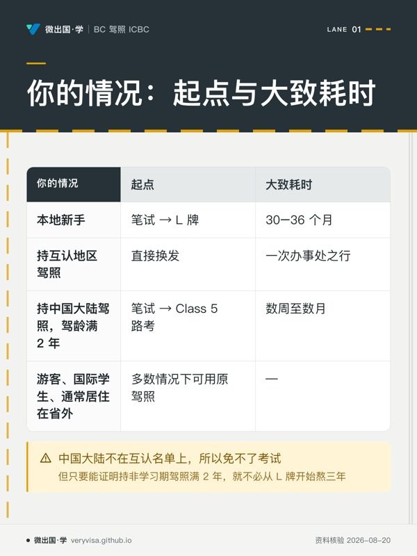
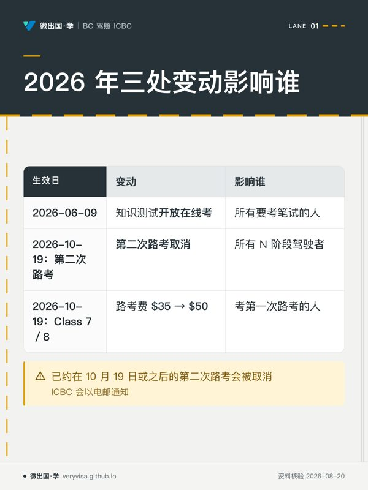

BC 驾驶学习 · VERYVISA
看懂道路情景，练出安全判断。
先读讲解建立结构，再用练习发现薄弱点，回到来源与解析复习。考试学习与实际办理的口径分别核对。
读懂取舍 · 核对依据 · 整理下一步
一张图看懂考纲
不看正文也能拿到本站的核心结论。全部知识卡在 <a href="cards/">知识卡</a> 页。

- 先看先横着比四行，优先定位与你身份最接近的一行。
- 易漏大陆证件不是互认换发；能否跳过学习阶段，关键还在驾龄证明。
- 下一步去练习，按自己的情况再选一次起点。

- 先看先看同一天的两行，分清升级安排和费用改动。
- 易漏线上重考的等待也已改变；驾驶记录评估另有年龄与安全驾驶条件。
- 下一步去讲解核对你属于哪类驾驶者。
自设练习配比
主题配比来自第三方题库观察，用于本地抽题；不代表ICBC官方细项权重。
讲义卡组
一屏一个意思，每几张插一道自测。不是把长文切碎——是单独编排过的取舍： 哪些值得独占一屏是判断。适合第一遍学与考前过；要查细节仍回全文讲解。
路考常见挂点清单
Common Road Test Errors
接近一半的人第一次路考没能通过——难的不是把车开顺，是让副驾的陌生人在四十分钟里看不出任何风险信号。这一篇把官方点名的挂点列全，并讲怎么纠正。
分级驾照 GLP 三级台阶
Graduated Licensing: L → N → Full
这是整套考照流程的地图——先弄清 L 要熬多久、N 卡在哪、2026-10-19 起第二次路考怎么没了，后面每一篇讲的都是这条台阶上的一级。
酒驾、扣分与罚则
Impaired Driving & Penalties
笔试卷面上占比很小，但答错代价最高——一次路边检测就可能当场损失六百到一千四百加元，而且不需要法院判决，路边就生效。
路权、让行与共享道路
Right of Way & Sharing the Road
这是卷面上最大的一块——路权、弱势道路使用者、观察与盲区、超车、态度、紧急处置加在一起占将近六成，远超中文备考圈对「背数字」的关注度。
交通标志与信号灯
Signs & Signals
ICBC 自己说差不多每五题就有一题问标志，而这一块最不需要死记——吃透形状与颜色的编码规律，没见过的标志也判得出来。
速度、跟车与停车泊车
Speed, Following Distance & Parking
这一块是全卷数字最密集的部分，且数字题要么全对要么全错——好在几乎都能从背后的道理推出来，不必硬背。
新移民换 BC 驾照
Licence Exchange for Newcomers
带外国驾照落地 BC 的人，第一件事不是学交规，是先弄清自己走哪条路——互认免试、还是两步都要考。判错这一步，代价是白等三年。
Class 5 路考将成历史
Class 5 Road Test & Driving Record Assessment
2026 年 10 月 19 日起，记录清白的新手驾驶者不再需要考第二次路考——如果你正在为它做准备，这一篇会先告诉你可能根本不用考了。
Class 7 路考流程与评分
Class 7 Road Test
接近一半的人第一次路考没能通过——不是题目刁钻，是大多数人准备的是「把车开好」，而考官评的是另一套东西。
题库覆盖诚实交代
这张表是给你看的，不是给我自己看的。题库还没铺满，哪里薄就写在这里。
| 板块 | 练习配比 | 题数 | 实际占比 | 状态 |
|---|---|---|---|---|
| 路权、共享道路与驾驶态度 | 61% | 75 | 50.3% | ⚠️ 缺口 |
| 速度、跟车与停车泊车 | 19% | 29 | 19.5% | — |
| 交通标志与信号灯 | 17% | 27 | 18.1% | — |
| 酒精、药物与罚则 | 3% | 10 | 6.7% | — |
逐主题拆解
按考纲权重组织的中文讲解。这是主线。
其它考试
一考一站，各自独立：进度、错题、复习队列互不影响。换设备用进度页的「导出学习数据」。